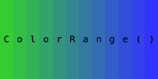

 This plugin provides an easy way to color a set of elements or anything else in a range between two colors.
The menu options below are created using a color range from red to blue:
$$('#menu li').applyColorRange('#f00', '#00f');
By default, ColorRange uses the background-color property to apply the color range. With a extra argument, however, these smiles seem to fade the world into a more happy place using the following code:
new ColorRange('#fff', '#000').apply('#smiles li', 'color');
The class does not track anything it does, it simply applies what you ask it to apply. So, you could combine multiple ranges for different properties if you want. The double faded list of smiles below is created using:
$$('#blocks li').applyColorRange('#ff3', '#f33', 'background-color').applyColorRange('#000', '#fff', 'color');